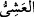
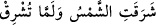

görüşten daha uzak bir ihtimaldir. Diğer bir görüşe göre ise dağlar, Allah’ın
kendilerinde yarattığı bir hayat, güç, akıl ve konuşma gücü sâyesinde tesbih
etmektedirler. Bu durumda Allah’ı akıl sâhibi canlı varlıkların tesbihine benzer şekilde
tesbih etmiş olurlar. Zâhir ulemâsının görüşleri bundan ibârettir. Hakikat ehline gelince,
onlara göre hayat sırrı, cemâd olsun, bitki olsun, hayvan olsun bütün varlıklara sirayet
etmiş haldedir. Yâni bütün varlıklarda hayat, arızî, temsîlî veya hâl şeklinde değil,
hakikî anlamda mevcuttur. Fakat bunun böyle olduğunu, kemâle ermiş keşif
sâhiplerinden başkası algılayamaz. Buna göre dağların Dâvûd’la beraber tesbih
etmeleri hakikî mânâda anlaşılmalıdır. Fakat bu, kendine özgü bir tarzda cereyan ettiği
ve akıl sınırlarının dışında garip bir şekilde duyulabildiği için Dâvûd’un mûcize ve
kerametlerinden sayılmıştır. Bu makamın gerçek veçhesi, burada daha fazla konuşmaya
gerek bırakmayacak şekilde defalarca anlatılmıştır.
“Doğrusu biz akşam sabah onunla beraber tesbih eden...”
(
) “akşam”, gündüzün sonu, işrâk da gündüzün başıdır. İşrak vakti, güneşin
“işrak” etmeğe yâni aydınlatmağa başladığı ve ışınlarının belli olduğu vakittir ki bu
vakit, kuşluk vaktidir. Güneşin “şurûk” etmesi doğması demektir. (
)
“Güneş doğdu”, “Güneş henüz doğmadı” gibi ifâdeler kullanılır.
İbn Abbas (r.a.)’ın şöyle dediği rivâyet edilir: Bu âyeti, işrakın ne anlama geldiğini
anlayamadan okuyup dururken, Ebû Talib’in kızı Ümm Hânî (r.anha) bana bildirdi ki:
Hz. Peygamber Mekke fethedildiği gün kendisinin yanına gelmiş ve abdest için su
getirmesini rica etmiş ve abdest almış -Buhârî’deki rivâyete göre ise, Ümmü Hânî’nin
evinde gusül abdesti almış ve sonra sekiz rek’at kuşluk namazı kılmış ve Ümmü Hânî!
“bu, işrak namazıdır.”[7] demiştir.
Buradan hareketle bazı âlimler, “Mekke’ye girdiğinde kuşluk namazı kılmak
isteyenler, tıpkı Hz. Peygamber (s.a.)’in Mekke’nin fethi günü yaptığı gibi, gusül abdesti
alır ve işrâk namazı kılar” demişlerdir.
Bazı âlimlere göre de duhâ/kuşluk namazı ile işrak namazı ayrı ayrı namazlardır.
Nitekim Hz. Peygamber’in şu hadisi de buna delâlet eder: “Her kim sabah namazını
cemâatle kılar, sonra güneş doğana kadar Allah’ı zikreder, sonra da iki rek’at namaz
kılarsa, kendisine tam bir hac ve tam bir umre sevabı verilir.” [8]
Şerhu’l-Mesâbîh’te belirtildiğine göre bu iki rek’atlik namaz, işrak namazıdır. Şu
hadis-i şerif de bu ikisinin ayrı namazlar olduğuna delâlet etmektedir: “Dâimâ Allah’a
yönelenlerin namazı, duhâ/kuşluk vakti yavrular yarıştığı (ramz) zaman kılınan
namazdır.” [9]
Hadisin anlamı şudur: Kuşluk namazı, ‘ramzâ’da yâni; üzerine güneş ışınlarının çok
düşmesi yüzünden müthiş bir şekilde ısınan yerde, deve yavruları güneşin harâretini
hissettiği zaman kılınır. Hadiste geçen “ramz” fiili, güneş ışınlarının kum vb. yerlere
çokça düşmesi demektir. “Fasîl”, süt içmeyi bırakıp sütten kesilen deve yavrusuna
denir. Hadiste özellikle deve yavrularının zikredilmesi, bunların o vakitte, ayak